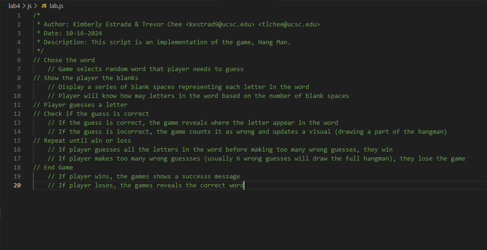

Lab 4 - Pseudocoding & Problem Solving
Challenge
Restate the challenge of the lab here.
Problems
What problems arose? How did you solve them?
Reflection
Put your reflections about this assignment here. How did it go? What kind of energy did you put into the assignment?
Results
//Collect your materials
//Sketch book, pens, pencils, erasers
//Find your subject chair (can be any chair)
//Position the chair in any way you like
//Sunlight or artificial light can be hitting it, can be placed at an angle
//Observe the chair
//Pay attention to the chair’s design - the curves, the surface, and how much detail certain parts of the chair has
//Create an outline sketch of the chair
//Doesn’t have to be detailed, jot down main features, like the legs, base, and back
//Shade in your sketch
//Lightly shade the parts where the light hits the chair, but shade the shadows darker
//Trace the outline of the chair with a pen (any pen)
//You are done!
//Chose the word
//Game selects random word that player needs to guess
//Show the player the blanks
//Let the player know how many blank spaces they need to fill in with a letter that corresponse to the word that was choosen
//Display a series of blank spaces representing each letter in the word
//Player will know how may letters in the word based on the number of blank spaces
//Player guesses a letter
//Check if the guess is correct
//If the guess is correct, the game reveals where the letter appear in the word
//If the guess is incorrect, the game counts it as wrong and updates a visual (drawing a part of the hangman)
//Repeat until win or loss
//If player guesses all the letters in the word before making too many wrong guesses, they win
//If player makes too many wrong guessses (usually 6 wrong guesses will draw the full hangman), they lose the game
//End Game
//If player wins, the games shows a successs message
//If player loses, the games reveals the correct word
